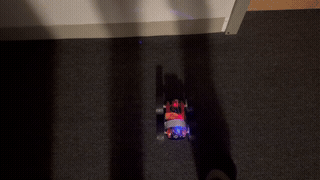
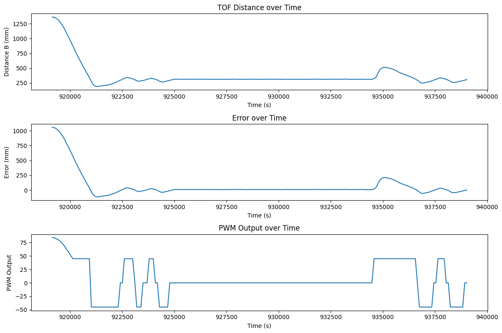
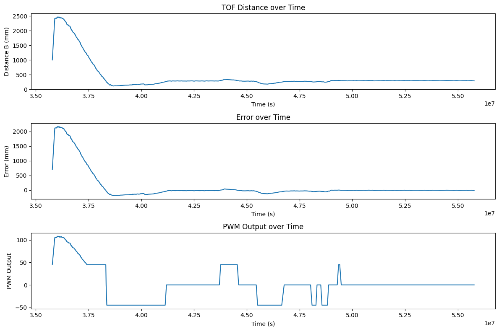
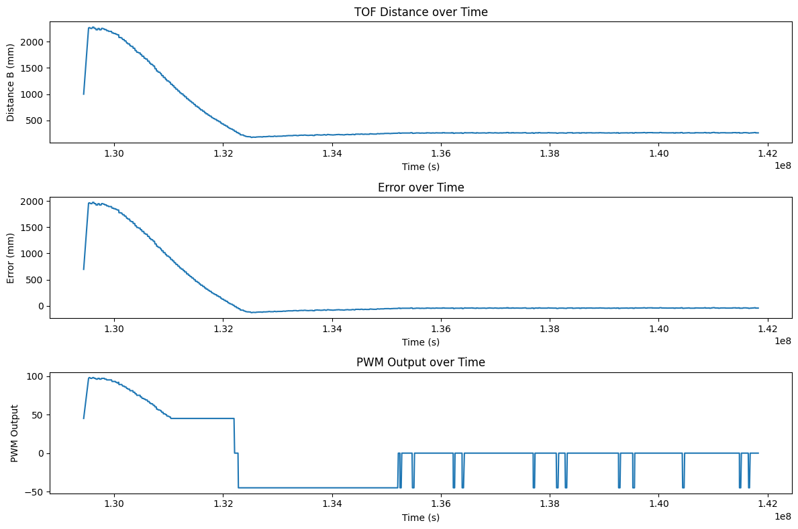
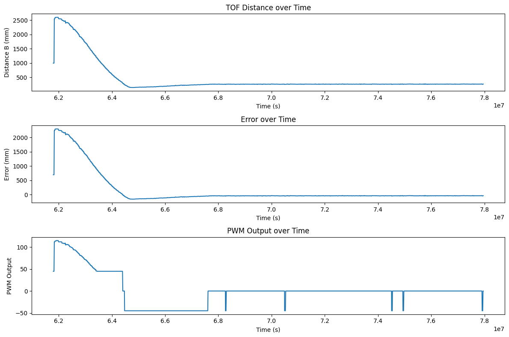
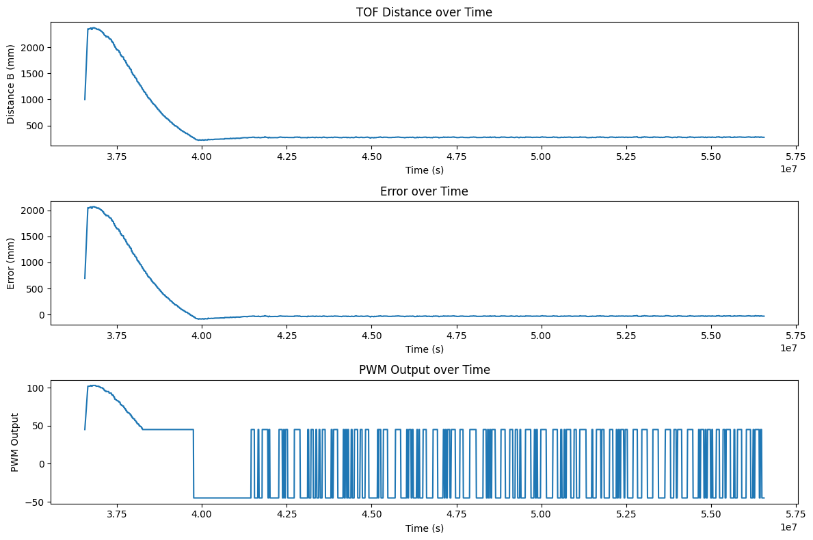
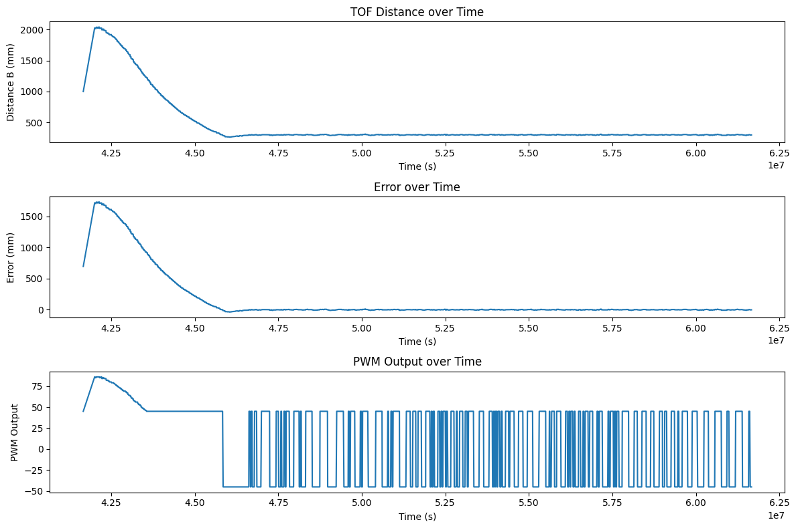
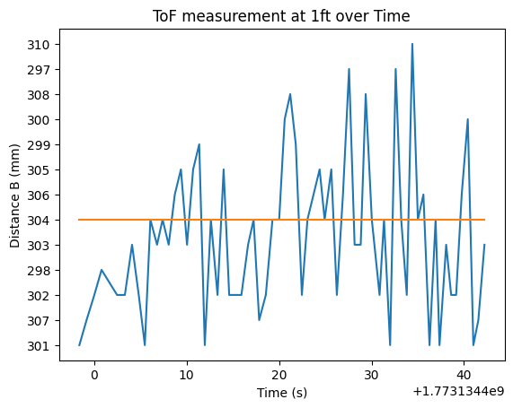

Arduino IDE • Bluetooth • Jupyter Notebooks • PID
This lab serves as an introduction to PID, controlling the robot to move forwards and stop a foot away from a wall. It also involves predicting the data through linear extrapolation when the sensor frequency is too slow compared to the robot movement.
To start the PID control scheme, we have to signal it from our Jupyter Notebook. This is done through a bluetooth command that intializes the PID state variables and inputs Kp, Ki, Kd, a timeout for how long we want the PID loop to run for, and a minimum PWM signal to accomodate for different floor conditions. The code to start and then stop is shown below:
case PID_FORWARDS_START:
{
// Uses the function in loop to start PID control
// Serial.println("Starting PID control loop in loop() function...");
pid_forwards_start = 1;
integral = 0;
previous_error = 0;
prev_distance = 4000;
// Extract the next value from the command string as an integer
success = robot_cmd.get_next_value(setpoint);
if (!success)
return;
// Serial.println("hi hi");
// Extract the next value from the command string as an integer
success = robot_cmd.get_next_value(Kp);
if (!success)
return;
// Serial.println("hi hi we hereeeeee");
// Extract the next value from the command string as an integer
success = robot_cmd.get_next_value(Ki);
if (!success)
return;
// Serial.println("hi hi WE AT HERE NOW");
// Extract the next value from the command string as an integer
success = robot_cmd.get_next_value(Kd);
if (!success)
return;
// Serial.println("hi hi GOT TO TIME OUTTTT");
// Extract the next value from the command string as an integer
success = robot_cmd.get_next_value(timeout);
if (!success)
return;
success = robot_cmd.get_next_value(min_pwm);
if (!success)
return;
success = robot_cmd.get_next_value(threshold);
if (!success)
return;
sensorB.startRanging();
pid_forwards_start_time = millis();
bufferIndex = 0;
bufferFull = false;
// printing pid_forwards_start
Serial.print("PID_FORWARDS_START: ");
Serial.println(pid_forwards_start);
break;If we wanted to stop the loop early then we have a PID stop command
case PID_FORWARDS_STOP:
{
// Stops the PID control loop that is running in loop()
pid_forwards_start = false;
stopMotors();
break;
}
The pid_forwards_start flag is used to call our pid movement function in the main loop. We also include a stop motor command if we disconnect from bluetooth to ensure that it doesnt run wildly everywhere.
void loop()
{
// Listen for connections
BLEDevice central = BLE.central();
// If a central is connected to the peripheral
if (central)
{
Serial.print("Connected to: ");
Serial.println(central.address());
// While central is connected
while (central.connected())
{
// Send data
write_data();
if (pid_forwards_start)
{
moveForwardsPID();
// stop if timed out
if (millis() - pid_forwards_start_time > timeout)
{
stoppingForwardsPID();
}
}
// Read data
read_data();
}
Serial.println("Disconnected");
stopMotors(); // stop motors when disconnected
}
}After the PID loop finishes, we send over the accumulated data over bluetooth:
void stoppingForwardsPID()
{
stopMotors();
pid_forwards_start = false;
// send PID data over BLE for debugging
int startPos = bufferFull ? bufferIndex : 0;
int totalPoints = bufferFull ? MAX_CAPACITY : bufferIndex;
Serial.printf("PID loop ended. Sending %d data points over BLE...\n", totalPoints);
for (int i = 0; i < totalPoints; i++)
{
// Calculate current circular index
int currentIndex = (startPos + i) % MAX_CAPACITY;
tx_estring_value.clear();
tx_estring_value.append("T:");
tx_estring_value.append(timeStampArray[currentIndex]);
tx_estring_value.append("D:");
tx_estring_value.append(distanceBArray[currentIndex]);
tx_estring_value.append("E:");
tx_estring_value.append(pidErrorArray[currentIndex]);
tx_estring_value.append("O:");
tx_estring_value.append(pidOutputArray[currentIndex]);
tx_characteristic_string.writeValue(tx_estring_value.c_str());
// Small delay to prevent overwhelming the BLE stack
delay(5);
}
}We then process this data in Python via a notification handler and save it to a CSV.
def parse_both_tofs(characteristic, data):
# Use regex to extract pitch and roll values from the string
data = ble.bytearray_to_string(data)
print(f"Received data: {data}")
match = re.match(r"T:([\d\.\-]+)D:([\d\.\-]+)E:([\d\.\-]+)O:([\d\.\-]+)", data)
if match:
time_val = float(match.group(1))
distB = float(match.group(2))
error = float(match.group(3))
pwm = float(match.group(4))
time_data.append(time_val)
distanceB_data.append(distB)
error_data.append(error)
pwm_data.append(pwm)
else:
print("Error parsing both TOF data")In the end, we chose to use a PI controller to control the robot. This was because a D term would just slow down the robot and make it less responsive, which is not ideal for a fast robot. The P term is responsible for correcting the error, while the I term is responsible for correcting any steady state error that may occur due to friction or other factors. We found that the P term was the most important for controlling the robot, and that the I term was only necessary to correct for small steady state errors.
For the first trial Kp value, we wanted to run the robot at 100 PWM as a baseline starting point. I originally had the ToF sensors on short mode so this calculation is based off of having the maximum distance of 1.3m, but during the lab I switched to long range mode and decreased the timing budget to 33ms to get better performance when starting from further away. If we want to run the robot at 100PWM at max distance of 1300mm and we want to stop 304mm away from the wall, 100 = Kp*(~1000) => Kp = 0.1. From there, I iteratively decreased Kp until I got a smooth approach to the wall without crashing. The motors also have a deadband of within 45 PWM on the carpeted floor, so I had set a minimum PWM of 45 to ensure that the robot could actually move. If the output was below 45, then it would be scaled up to 45. Below are the results of the robot using proportional control on tile and carpet with a Kp of 0.06 and a minimum PWM of 25 on tile, and 0.05 and 45 on carpet.

The robot quickly settles to a steady state that oscillates around 304mm and correctly returns to that set point when genty moved out of the way. We can also see the rapid switching between minimum PWM values due to the deadband. There honestly isn't much steady state error since the main source of error at this point is ToF sensor innaccuracy at the few mm level, but we will still implement the I term.
For the first trial Ki value, we wanted to just correct the output very slightly. When first running the robot, we saw that the accumulated error was around 3000 by the time it started to settle around the wall. With a Kp of 0.05 and a steady error of about 4mm, that gives a preliminary output of 0.02. If we want to slightly correct that to around 0.05, then we can have 0.05 = 0.02 + Ki*3000 => Ki = 0.00001. From there, I iteratively increased Ki until I got a slightly faster approach to the wall without too much overshoot. We settled on a Ki of 0.001. However, introducing the integral term caused more problems than solutions. The controller was already performing pretty well without much steady state error, but an integrator without windup protection just increased the error sum, skewing the PWM output and preventing it from oscillating around the setpoint. the error sum would grow greatly when we approach the wall and would be too alrge to quickly decrease once we close to the wall. This caused the robot to overshoot and oscillate around a point closer to the wall where the propertional term balanced out the integral term. Below are three videos and plots of the controller working with the integral term.



The robot had an average speed of descent measured from the fourth measurement, to remove any stray distance values from initialization and when the sensor relies on preset values, to when the robot reaches 100mm before the set point. The average descent speeds for each video in order is: 890mm/sec, 750mm/sec, and 886mm/sec. The code to calculate this is shown below:
def find_avg_speed_from_csv(file_path):
time_data = []
distanceB_data = []
with open(file_path, 'r') as csvfile:
reader = csv.DictReader(csvfile)
for row in reader:
time_data.append(float(row['Time']))
distanceB_data.append(float(row['DistanceB']))
# get average speed (take the fourth measurement and then check what time the distance gets to 100mm)
first_dist = distanceB_data[3]
first_time = time_data[3]
second_dist = -1
second_time = -1
print(distanceB_data)
for ind, i in enumerate(distanceB_data):
if i \<\ 400:
second_dist = i
second_time = time_data[ind]
break
print(first_dist, second_dist, first_time, second_time)
avg_speed = (first_dist - second_dist)/(first_time - second_time) * 1000
return avg_speedOur PID loop runs way faster than the speed that our ToF sensors can output distance measurements. The PID loop runs at about (2922 samples/20 sec) = 146.1Hz while the ToF sensor gives a new measurement every 33ms (30.3Hz). This means that we are running the PID loop with stale measurements about 4/5 times, which could be improved. If we extrapolate our previous two Tof readings, we can use the current time and the time of those readings to get a linear prediction of where we should be and use that when we don't have a measurement ready. A plot of this running and the code to calculate this is shown below:

The robot did not show any noticible improvements in settling time or lack of oscillations. This is most likely due to the robot running at relatively slow speeds so the extrapolated measurements aren't too different from the real ones. The robot never needs to break THAT hard in this case. If we ran the robot at a much faster speed then we would expect to see greater improvements though.
if (distance == -1)
{
// If reading failed, skip this loop iteration
// return;
// distance = prev_distance; // use previous distance if reading failed
// linearly extrapolate distance based on dt
int current_time2 = micros();
float slope = (prev_distance - prev_prev_distance)/(prev_pid_time - prev_prev_pid_time);
float dt2 = (current_time2 - prev_pid_time);
distance = prev_distance + slope * dt2;
}As mentioned previously, the main problem with our integral term is that it accumulates way too much error in the beginning as it approaches the wall. This can cause worse problems if our integral term was larger, since large amounts of error can accumulate, causing the robot to overshoot and slam hard into a wall. Below is a video of this happening at 4am as it slams into my roomates doors:
When used correctly, adding a max error sum of 100 can prevent the error from ever accumulating too much allowing the PID loop to dissipate it when it gets stuck too close to the wall as well as preventing any large overshoots. Below is a video and plot of the robot running with this windup protection.

This version has an integral term and oscillates very closely around 304mm. This is the limit of precision that we are able to get since from here we are limited by the preciseness of our ToF sensor. Our ToF sensor, as hooked up, oscillates around 304mm itself so our robot can never gain better precision from this one sensor measurement. Below is a plot of the ToF sensor over time as it stands still to showcase this.

I collaborrated with Ananya Jajodia and Shao Stassen on this lab. I also used Aidan Derocher's website as a reference for the plots and extrapolation.
Copyrights © 2019. Designed & Developed by Themefisher